تَرسَّخ في الذاكرة الرسمية الجزائرية أنّ عبد القادر هو «بطل المقاومة ضد فرنسا» ورمز الكفاح الوطني. غير أنّ مراجعة الوثائق الأصلية – من معاهدات ورسائل ومذكّرات، إضافةً إلى الأرشيف الفرنسي ومصادر جزائرية كـ تحفة الزائر وحياة الأمير – تكشف صورةً مغايرة: معاهدات اعتراف بالسيادة الفرنسية، طلبُ السلاح من باريس لقتال جزائريين رافضين بيعته، استسلامٌ طوعي سنة 1847، ثم معاشات وأوسمة ورعاية من نابوليون الثالث، وصولًا إلى انخراطٍ في المحافل الماسونية.
1) معاهدات الاعتراف بالسيادة الفرنسية
أ. معاهدة دي ميشيل (1834)
نصّت على وقف القتال، واعتراف عبد القادر بسيطرة فرنسا على وهران وموانئها، والسماح بوجود قناصل فرنسيين¹.
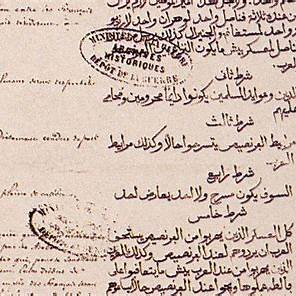
ب. معاهدة التافنة (1837)
أقرّ عبد القادر صراحة بسيادة فرنسا على الجزائر، مقابل اعترافٍ بسلطته على الداخل².
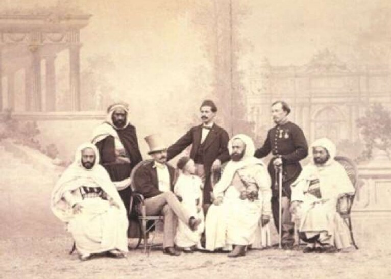
ج. شهادة من تحفة الزائر
«ارتضى والدي الصلح مع الفرنسيين على أن يتركوا له ما وراء متيجة والتيطري.»
يورد محمد بن عبد القادر هذا النص صريحًا حول نطاق الصلح وتقاسُم النفوذ³.
الخلاصة: تُسقط هذه النصوص فكرة «رفض السيادة الفرنسية رفضًا مطلقًا»؛ إذ كان الاعتراف بها جزءًا من براغماتية عبد القادر.
2) طلب السلاح من فرنسا لقمع الجزائريين
«نحب عندك نحو 300 مكحلة لاستعداد العسكر لأخذ الثأر من هؤلاء الخوارج، وبارود وسلطان.»
ورد ذلك في رسالة إلى الجنرال دي ميشيل، حيث طلب 300 بندقية لا لقتال الفرنسيين بل لقمع قبائل جزائرية⁴.
«قد وصلتنا البنادق والمدافع التي وعدتمونا بها، وقد استعملناها في قتال العصاة.»
يُقرّ عبد القادر في رسالة شكر لاحقة بوصول السلاح الفرنسي واستعماله ضد «العصاة» من الجزائريين⁵.
وخلال حصار الزاوية التيجانية، أشار صراحةً: «قد حصلنا من الفرنسيين على ثلاثة مدافع، وهي الآن معنا في الحصار.»⁶
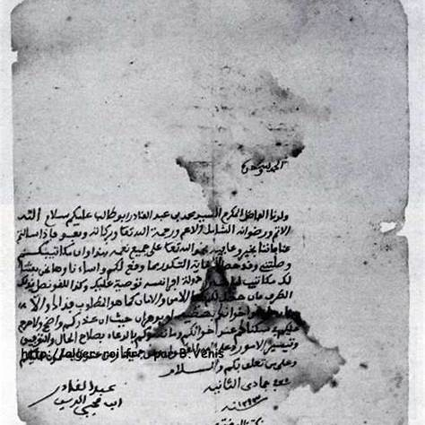
3) الرواتب والأوسمة
يذكر يحيى بوعزيز «تخصيص معاش دائم لعبد القادر وأسرته من الحكومة الفرنسية»⁷.
«أخذتُ عليّ فرنسا عهدًا أن ترعاني وأهلي، وقد أوفت بما وعدت.»
يرد هذا التصريح في حياة الأمير مؤكِّدًا طبيعة الرعاية الفرنسية⁸.
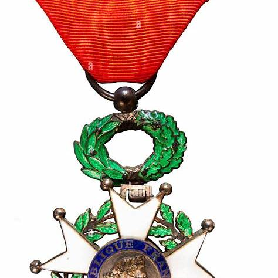
عند الإفراج عنه (1852) كان راتب عبد القادر من الحكومة الفرنسية 100,000 فرنك سنويًا، وهو مثبت بوثائق أرشيفية (إيصالات القنصلية في البورصة ابتداءً من مارس 1853) ¹⁷. لاحقًا، رُفع المعاش إلى 150,000 فرنك سنويًا بعد أحداث دمشق سنة 1860 ¹⁸.
الخلاصة: انتقالٌ من عدوّ لدود إلى مكرَّمٍ ومُراعى برعاية باريس.
4) إقامة أمبواز: قصر لا سجن
«لم يكن أسيرًا في زنزانة، بل نزيل قصر تاريخي، يلتقي الوفود ويستقبل العلماء.»
هكذا وصف بول أزان فترة أمبواز¹⁰.
«أقاموني في دار عظيمة بأمبواز، فوجدنا فيها من أسباب الراحة ما لم نعهده في ديارنا.»
ويؤكِّد حياة الأمير وفرة أسباب الراحة خلال الإقامة¹¹.
الخلاصة: لم تُعامِل فرنسا عبد القادر كأسير حرب، بل كـ«رأس مال رمزي» يُوظَّف سياسيًا.
5) رسائل الولاء إلى نابوليون الثالث
«أدعو الله أن يثبّت مُلككم، ويجعل النصر حليفكم.»
من مراسلات سنة 1855، وفيها عبارات دعاء وتأييد صريح¹².
«ملك قلبي.»
وصفٌ يتجاوز حدود المجاملة الدبلوماسية¹³.
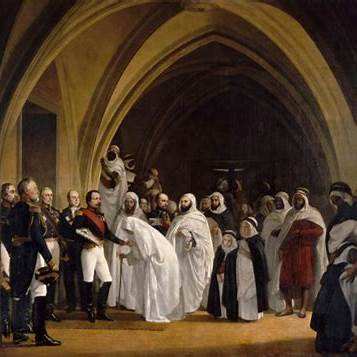
6) الاستسلام الطوعي
«لقد سلّمتُ نفسي طوعًا، غير نادمٍ ولن أندم، إذ لم تعد القبائل تطيع أمري.»
نصٌّ صريح في حياة الأمير يؤكِّد طبيعة الاستسلام الطوعي سنة 1847¹⁴.
وفي خطاب الاستسلام إلى لاموريسيير: «أسلّم نفسي وسلاحي، على أن تضمنوا لي مقراً آمناً تحت رعاية فرنسا.»¹⁵
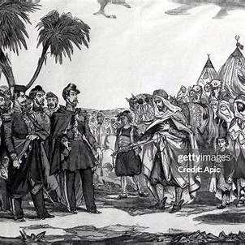

7) الانتماء الماسوني
يذكر برونو إتيان أنّ عبد القادر «انتسب لمحفل ماسوني في الإسكندرية في ثلاثينيات القرن التاسع عشر، واحتُفي به أخًا حرًّا مقبولًا»¹⁶.
كما تتضمن محفوظات BnF — منصة Gallica — إشارات إلى مراسلات مرتبطة بمحفل «هنري الرابع»، بما يُعزّز القرائن حول علاقة عبد القادر بالبيئة الماسونية خلال إقامته في المشرق وأوروبا ²⁰.
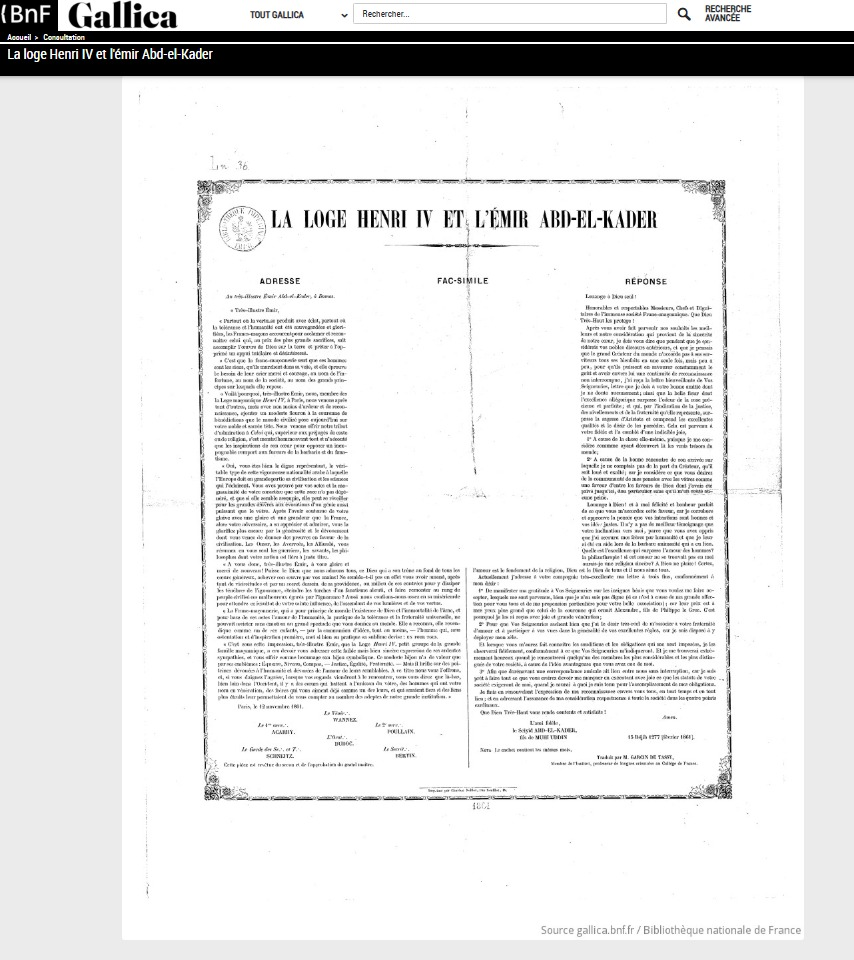
8) محاولة الانقلاب على السلطان المغربي عبد الرحمن (1860)
تُظهر شواهد معاصرة، وعلى رأسها نص Achille Fillias (1860)، أن عبد القادر خان إحسان السلطان عبد الرحمن بن هشام، إذ سعى إلى قلب الحكم في المغرب واستثمار التذمّر الشعبي لصالحه. وقد خاطر السلطان بمملكته وخاض حربًا ضروسًا مع فرنسا (إيسلي 1844) بعدما آوى عبد القادر؛ ومع ذلك، تشير صفحات فيلياس بوضوح إلى أن عبد القادر حاول توجيه السخط العام لاختراق السلطة وإزاحة السلطان. ¹⁹
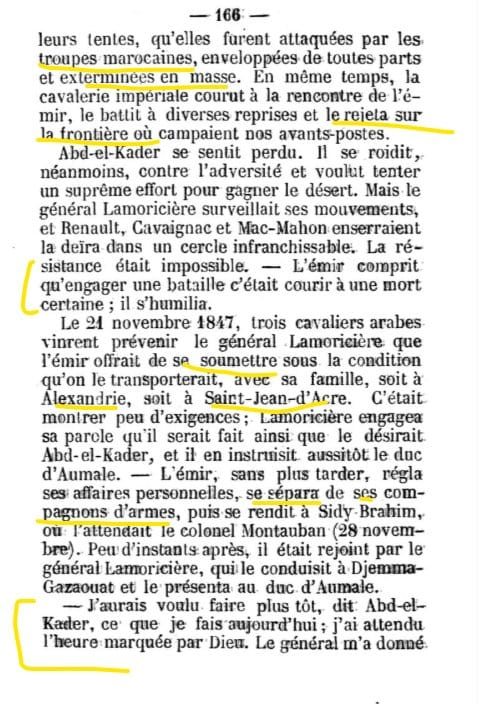
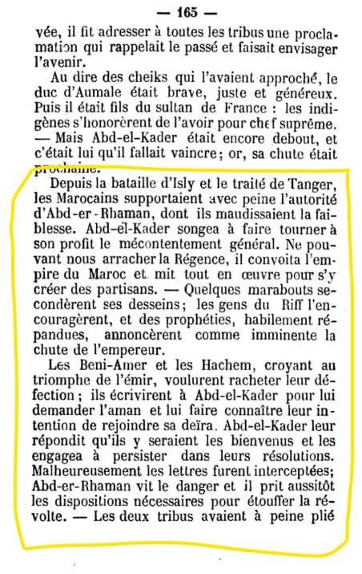
خلاصة صارمة: الوثيقة تُثبت توجّهًا انقلابيًا لدى عبد القادر ضد السلطان الذي أحسن إليه وحمى ظهره سياسيًا وعسكريًا.
9) مراسلة مع حاكم مليلية الإسبانية — نقل معلومات وإخضاع الريف
يُفيد نص الرسالة المنشور لدى ميكيل دو إيبالزا أن عبد القادر كان يتخابر مع الحاكم العسكري لمليلية الخاضعة للاحتلال الإسباني، ويزوّده بمعلومات عن قبائل الريف، بل ويضغط لإخضاع بعضها خدمةً لمصالح المحتل. وهذا يعني عمليًا التجسس على السلطان عبد الرحمن بن هشام وإعانة خصومه الإقليميين. ²¹
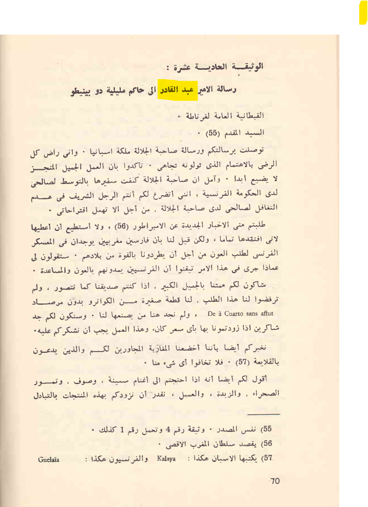
خلاصة صارمة: المراسلة تُظهر تعمّد نقل معلومات حسّاسة وإرادة إخضاع قبائل مغربية لصالح قوة أجنبية محتلة.
10) مشروع التحالف مع بريطانيا لقلب السلطان والتنازل عن طنجة
يورد أشيل فيلياس في كتابه L’Espagne et le Maroc en 1860 أن بريطانيا غيّرت خططها بعد هزيمة عبد القادر، ووجّهت طموحه وعرضت عليه خدماتها. ووفق رواية المؤلف، تصوّر عبد القادر مشروع قلب السلطان عبد الرحمن بن هشام، على أن يتنازل لبريطانيا عن ميناء طنجة الذي كانت تطمع فيه، وأن يصبح حليفًا قويًا لها إذا تمكّن من السيطرة على الإمبراطورية المغربية. ²²
«بعد هزيمة عبد القادر، غيّرت إنجلترا خططها فورًا، ووجّهت طموح الأمير وقدّمت له خدماتها الحسنة. وعندها تصوّر عبد القادر مشروع قلب عبد الرحمن. فإذا أصبح سيدًا على الإمبراطورية، فإنه سيتنازل لبريطانيا عن ميناء طنجة إن كانت تطمع فيه، وسيصبح لها حليفًا قويًا».
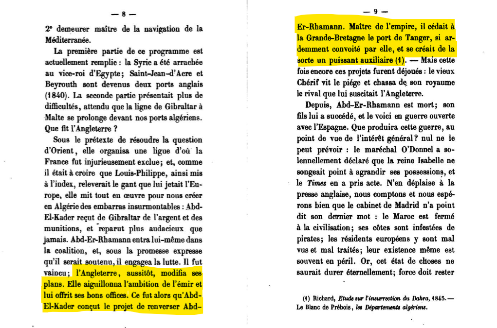
الدلالة: ينسب هذا المصدر المعاصر إلى عبد القادر مشروع صفقة سياسية مع قوة أجنبية تقوم على إسقاط سلطان المغرب ومكافأة بريطانيا بميناء طنجة مقابل دعمها وتحالفها.
خاتمة: بين الأسطورة والوثيقة
تؤكِّد هذه الوثائق أنّ عبد القادر لم يكن «المقاوم المطلق» كما سوّقته السردية الرسمية، بل زعيمًا قبليًا براغماتيًا: أبرم معاهدات إذعان، طلب سلاحًا فرنسيًا لقمع جزائريين، استسلم طوعًا، ثم عاش برعاية فرنسا مكرّمًا بأوسمتها. إن إعادة قراءة هذه المرحلة ضرورةٌ تاريخيةٌ لفصل الأسطورة المصنوعة بعد الاستقلال عن الوقائع المدوَّنة في الأرشيفين الجزائري والفرنسي.
الهوامش
- Paul Azan, L’Émir Abd el-Kader, 1808–1883, Paris, 1925, p. 62. ↩︎
- Azan, 1925, p. 129 (سيادة فرنسا مقابل الاعتراف بسلطة عبد القادر في الداخل). ↩︎
- محمد بن عبد القادر، تحفة الزائر، ج1، ص233. ↩︎
- «مراسلات عبد القادر» إلى الجنرال دي ميشيل: طلب 300 مكحلة لقمع «الخوارج». ↩︎
- مراسلة شكر بوصول البنادق والمدافع واستعمالها ضد «العصاة» (الأرشيف الفرنسي). ↩︎
- إشارة خلال حصار الزاوية التيجانية بالحصول على ثلاثة مدافع من الفرنسيين (الأرشيف الفرنسي). ↩︎
- يحيى بوعزيز، كفاح الجزائر من خلال الوثائق، ص191. ↩︎
- حياة الأمير، ص214. ↩︎
- حول وسام «جوقة الشرف»: سجلات الأوسمة/الأرشيف الفرنسي. ↩︎
- Azan, 1925, p. 178 (وصف إقامة أمبواز). ↩︎
- حياة الأمير، ص220. ↩︎
- مراسلات عبد القادر مع نابوليون الثالث، 1855. ↩︎
- المصدر نفسه: تعبير «ملك قلبي». ↩︎
- حياة الأمير، ص198 (إقرار الاستسلام الطوعي). ↩︎
- خطاب الاستسلام إلى لاموريسيير: «أسلّم نفسي وسلاحي…» (الأرشيف الفرنسي). ↩︎
- Bruno Étienne, Abd el-Kader, Hachette, 1994, p. 87 (الانتماء الماسوني). ↩︎
- Archives diplomatiques françaises — Reçus de la consulat (Bourse)، منذ مارس 1853: إيصالات راتب عبد القادر (100,000 فرنك سنويًا). ↩︎
- Jacques Frémeaux, Abd el-Kader, chef de guerre (1832–1847) — رفع المعاش إلى 150,000 فرنك سنويًا عقب أحداث دمشق 1860. ↩︎
- Achille Étienne Fillias, L’Espagne et le Maroc en 1860, Paris, Poulet-Malassis et De Broise, 1860, pp. 165–166. ↩︎
- BnF — Gallica، Fonds Franc-maçonnerie: مراسلة محفل «هنري الرابع» بوصفها دليلًا على الانتماء الماسوني. ↩︎
- ميكيل دو إيبالزا، «الجديد في علاقات عبد القادر مع إسبانيا وحُكامها العسكريين بمليلية» (تعريب: يحيى بوعزيز)، الوثيقة الحادية عشرة: «رسالة عبد القادر إلى حاكم مليلية دو بينيتو». ↩︎
- Achille Étienne Fillias, L’Espagne et le Maroc en 1860, Paris, Poulet-Malassis et De Broise, 1860, pp. 8–9. ↩︎
المراجع المختارة
- محمد بن عبد القادر، تحفة الزائر، ج1.
- حياة عبد القادر (إملاءاته).
- Paul Azan, L’Émir Abd el-Kader, 1808–1883, Paris, 1925.
- يحيى بوعزيز، كفاح الجزائر من خلال الوثائق.
- Bruno Étienne, Abd el-Kader, Hachette, 1994.
- Jacques Frémeaux, Abd el-Kader, chef de guerre (1832–1847).
- Achille Étienne Fillias, L’Espagne et le Maroc en 1860, Paris, Poulet-Malassis et De Broise, 1860.
- BnF — Gallica، Fonds Franc-maçonnerie (محفل «هنري الرابع»).
- وثائق مراسلة حاكم مليلية (الأرشيف الإسباني/مليلية) — تفاصيل تُستكمل.